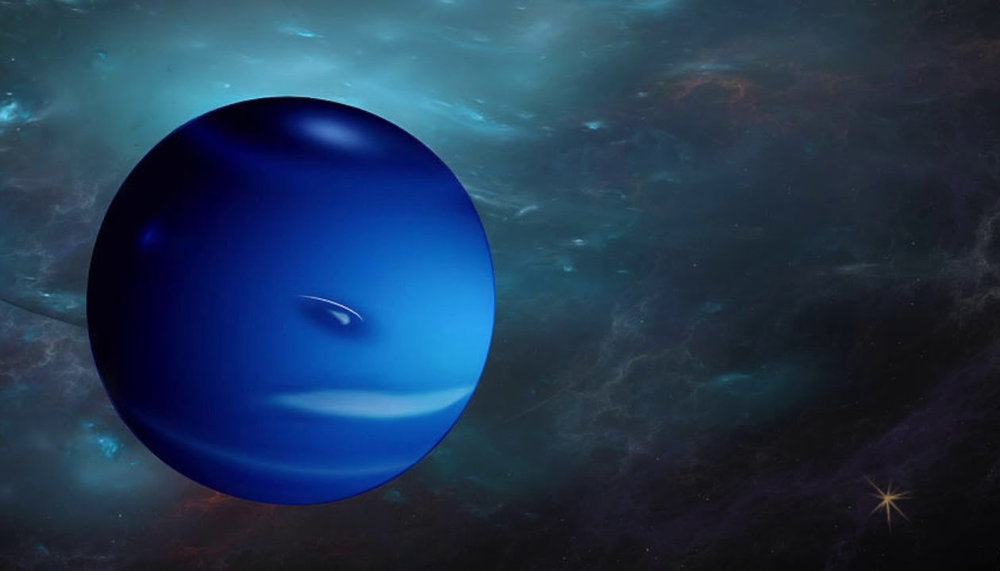

Нептун
Открыть карту солнечной системыНептун находится так далеко, что его нельзя увидеть с Земли невооружённым глазом. Он был открыт в 1846 году, когда астрономы искали планету, вызывающую орбитальные отклонения Урана.
Основные характеристики
Достоверные данные о Нептуне получены «Вояджером-2» в 1989 году. Верхние слои его атмосферы состоят из водорода (80%), гелия (19%) и метана (1%). Именно обилием метана объясняется сине-голубое свечение планеты.
Раз в несколько лет в атмосфере планеты появляются и исчезают тёмные пятна штормов. Предположительно в центре Нептуна — ледяное ядро, а мантия состоит из жидкой смеси воды и аммиака. Средняя температура поверхности — −214°С.
Солнечный свет достигает Нептуна почти за 5 часов, а нептунианский год равен 165 земным. Полный оборот вокруг своей оси планета делает довольно быстро — сутки длятся всего 17 часов. Наклон оси Нептуна близок к земному — 28°.
На настоящий момент учёные знают о 14 спутниках Нептуна, лишь один из которых (Тритон) обладает сферической формой. Это единственный в системе крупный спутник с обратным вращением. У Нептуна есть три кольца, хотя выражены они слабо.
За глубокий синий цвет планета была названа именем древнеримского бога морей.
